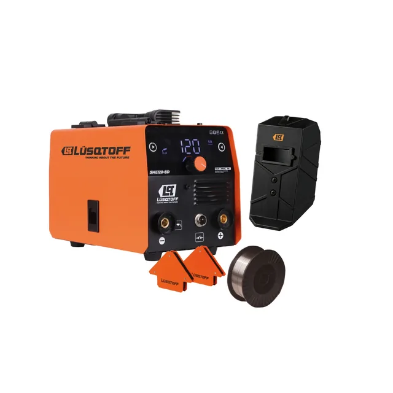

120 A.
Solo en un modo.
Una máquina, tres procesos
La corriente del título
vale para un solo proceso.
vale para un solo proceso.
Flux
0 A
Electrodo
0 A
TIG
0 A
120 A corresponde únicamente al modo Flux. En electrodo revestido y TIG, la máxima es 100 A.Lüsqtoff SML120-8DK · Ficha oficial del fabricante.
Y un dato que no cierra
La ficha dice una tensión.
La red, otra.
La red, otra.
200 VFicha web del modelo
≠
220 VRed eléctrica argentina
Antes de operar, confirmá la placa metálica de la máquina y su rango de tolerancia de entrada.Contradicción registrada y señalada en la ficha de TallerLab.
Fichas técnicas
Lo que la ficha dice.
Y lo que no cierra.
Y lo que no cierra.
Corriente por proceso, ciclo de trabajo y contradicciones señaladas, modelo por modelo.
Ver soldadoras →
tallerlab.com.ar/soldadoras/